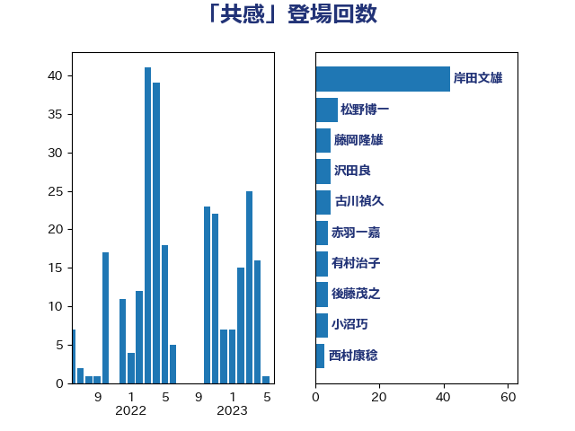

単語「共感」

| 岸田文雄 | 自由民主党 | 42 回 |
| 松野博一 | 自由民主党 | 7 回 |
| 藤岡隆雄 | 立憲民主党 | 5 回 |
| 沢田良 | 日本維新の会 | 5 回 |
| 古川禎久 | 自由民主党 | 5 回 |
| 赤羽一嘉 | 公明党 | 4 回 |
| 有村治子 | 自由民主党 | 4 回 |
| 後藤茂之 | 自由民主党 | 4 回 |
| 小沼巧 | 立憲民主党 | 4 回 |
| 西村康稔 | 自由民主党 | 3 回 |
| 茂木敏充 | 自由民主党 | 3 回 |
| 礒崎哲史 | 国民民主党 | 3 回 |
| 林芳正 | 自由民主党 | 3 回 |
| 山田賢司 | 自由民主党 | 3 回 |
| 小田原潔 | 自由民主党 | 3 回 |
| 伴野豊 | 立憲民主党 | 3 回 |
| 伊藤孝恵 | 国民民主党 | 3 回 |
| 齋藤健 | 自由民主党 | 2 回 |
| 高橋千鶴子 | 日本共産党 | 2 回 |
| 階猛 | 立憲民主党 | 2 回 |
| 辻清人 | 自由民主党 | 2 回 |
| 紙智子 | 日本共産党 | 2 回 |
| 石垣のりこ | 立憲民主党 | 2 回 |
| 田畑裕明 | 自由民主党 | 2 回 |
| 浜口誠 | 国民民主党 | 2 回 |
| 河野義博 | 公明党 | 2 回 |
| 森本真治 | 立憲民主党 | 2 回 |
| 平沼正二郎 | 自由民主党 | 2 回 |
| 岡本あき子 | 立憲民主党 | 2 回 |
| 山田勝彦 | 立憲民主党 | 2 回 |
| 小池晃 | 日本共産党 | 2 回 |
| 小林史明 | 自由民主党 | 2 回 |
| 宮崎勝 | 公明党 | 2 回 |
| 大岡敏孝 | 自由民主党 | 2 回 |
| 塩村あやか | 立憲民主党 | 2 回 |
| 堀井巌 | 自由民主党 | 2 回 |
| 嘉田由紀子 | 無所属 | 2 回 |
| 吉田豊史 | 無所属 | 2 回 |
| 伊藤岳 | 日本共産党 | 2 回 |
| 下野六太 | 公明党 | 2 回 |
| 高見康裕 | 自由民主党 | 1 回 |
| 馬場雄基 | 立憲民主党 | 1 回 |
| 須藤元気 | 無所属 | 1 回 |
| 音喜多駿 | 日本維新の会 | 1 回 |
| 青島健太 | 日本維新の会 | 1 回 |
| 青山繁晴 | 自由民主党 | 1 回 |
| 長友慎治 | 国民民主党 | 1 回 |
| 鈴木隼人 | 自由民主党 | 1 回 |
| 金子恵美 | 立憲民主党 | 1 回 |
| 赤木正幸 | 日本維新の会 | 1 回 |
| 西銘恒三郎 | 自由民主党 | 1 回 |
| 西村明宏 | 自由民主党 | 1 回 |
| 荒井優 | 立憲民主党 | 1 回 |
| 若宮健嗣 | 自由民主党 | 1 回 |
| 芳賀道也 | 国民民主党 | 1 回 |
| 舞立昇治 | 自由民主党 | 1 回 |
| 穀田恵二 | 日本共産党 | 1 回 |
| 福田達夫 | 自由民主党 | 1 回 |
| 福島伸享 | 無所属 | 1 回 |
| 石橋通宏 | 立憲民主党 | 1 回 |
| 石井章 | 日本維新の会 | 1 回 |
| 田村まみ | 国民民主党 | 1 回 |
| 田島麻衣子 | 立憲民主党 | 1 回 |
| 生稲晃子 | 自由民主党 | 1 回 |
| 甘利明 | 自由民主党 | 1 回 |
| 玉木雄一郎 | 国民民主党 | 1 回 |
| 片山大介 | 日本維新の会 | 1 回 |
| 片山さつき | 自由民主党 | 1 回 |
| 源馬謙太郎 | 立憲民主党 | 1 回 |
| 浮島智子 | 公明党 | 1 回 |
| 浅野哲 | 国民民主党 | 1 回 |
| 津島淳 | 自由民主党 | 1 回 |
| 泉健太 | 立憲民主党 | 1 回 |
| 河野太郎 | 自由民主党 | 1 回 |
| 河西宏一 | 公明党 | 1 回 |
| 永岡桂子 | 自由民主党 | 1 回 |
| 水岡俊一 | 立憲民主党 | 1 回 |
| 武部新 | 自由民主党 | 1 回 |
| 榛葉賀津也 | 国民民主党 | 1 回 |
| 森屋宏 | 自由民主党 | 1 回 |
| 梅村聡 | 日本維新の会 | 1 回 |
| 梅村みずほ | 日本維新の会 | 1 回 |
| 柴田巧 | 日本維新の会 | 1 回 |
| 松原仁 | 立憲民主党 | 1 回 |
| 東徹 | 日本維新の会 | 1 回 |
| 末松信介 | 自由民主党 | 1 回 |
| 新藤義孝 | 自由民主党 | 1 回 |
| 斉藤鉄夫 | 公明党 | 1 回 |
| 志位和夫 | 日本共産党 | 1 回 |
| 平山佐知子 | 無所属 | 1 回 |
| 川崎ひでと | 自由民主党 | 1 回 |
| 岬麻紀 | 日本維新の会 | 1 回 |
| 岩屋毅 | 自由民主党 | 1 回 |
| 山本香苗 | 公明党 | 1 回 |
| 山岸一生 | 立憲民主党 | 1 回 |
| 山下芳生 | 日本共産党 | 1 回 |
| 小西洋之 | 立憲民主党 | 1 回 |
| 小渕優子 | 自由民主党 | 1 回 |
| 小沢雅仁 | 立憲民主党 | 1 回 |
| 宮本徹 | 日本共産党 | 1 回 |
| 守島正 | 日本維新の会 | 1 回 |
| 大西健介 | 立憲民主党 | 1 回 |
| 塩川鉄也 | 日本共産党 | 1 回 |
| 堤かなめ | 立憲民主党 | 1 回 |
| 國場幸之助 | 自由民主党 | 1 回 |
| 吉良州司 | 無所属 | 1 回 |
| 吉田宣弘 | 公明党 | 1 回 |
| 吉田はるみ | 立憲民主党 | 1 回 |
| 吉川赳 | 無所属 | 1 回 |
| 古屋範子 | 公明党 | 1 回 |
| 務台俊介 | 自由民主党 | 1 回 |
| 前川清成 | 日本維新の会 | 1 回 |
| 佐藤英道 | 公明党 | 1 回 |
| 伊佐進一 | 公明党 | 1 回 |
| 井上哲士 | 日本共産党 | 1 回 |
| 中島克仁 | 立憲民主党 | 1 回 |
| 上川陽子 | 自由民主党 | 1 回 |
| たがや亮 | れいわ新選組 | 1 回 |
| おおつき紅葉 | 立憲民主党 | 1 回 |